We're building Daggerheart for Foundry.
Welcome to the unofficial, community made
Daggerheart system for
FoundryVTT.
This system is designed to capture
the full flavor of the 2d12 Hope & Fear dice mechanics, character
builds, and collaborative storytelling magic.
Please keep in mind that the system has not been release just yet, but is almost complete.
About the System
The system includes complete character creation using card choices, Hope and Fear dice mechanics, team tags, group checks, and unique features tailored for the Daggerheart experience.
This site will grow with new features, documentation, and updates. Bookmark us and check back soon!
Screenshot Gallery (Work in Progress)
 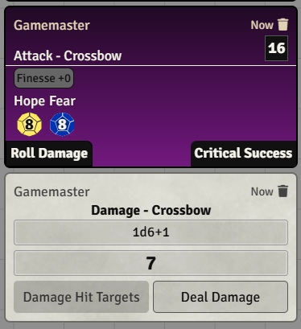
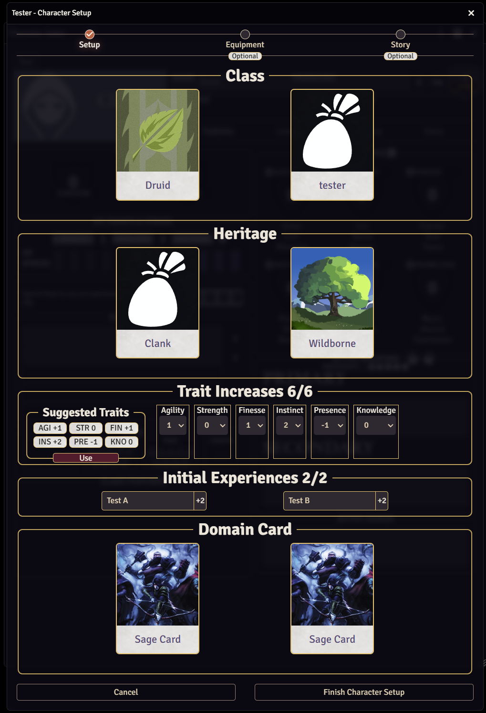
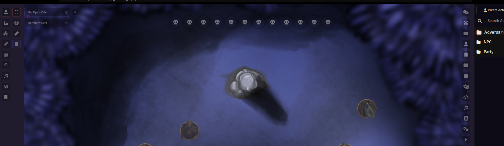
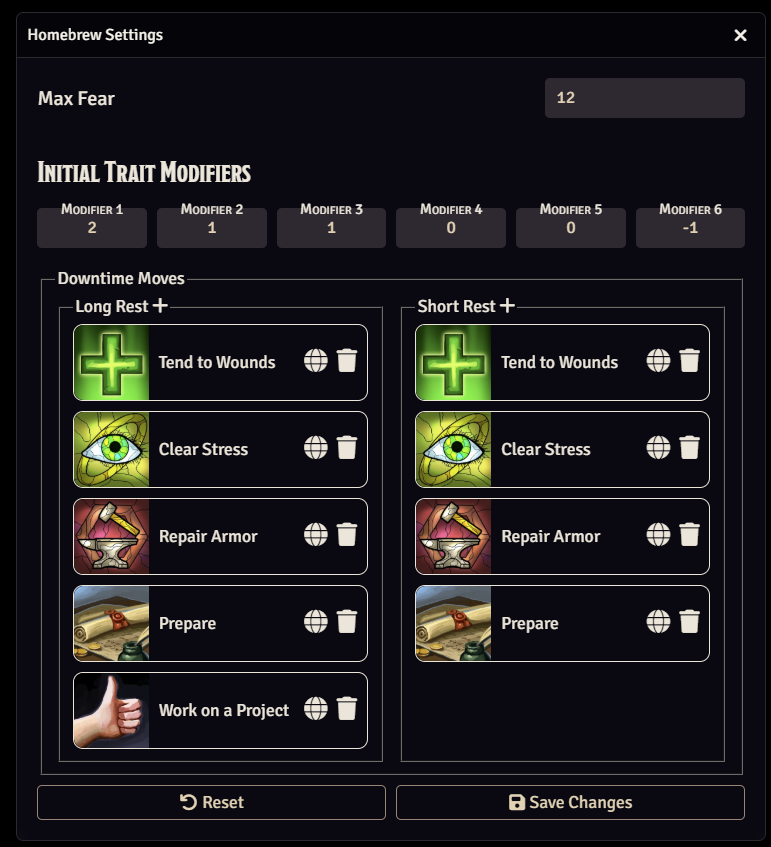
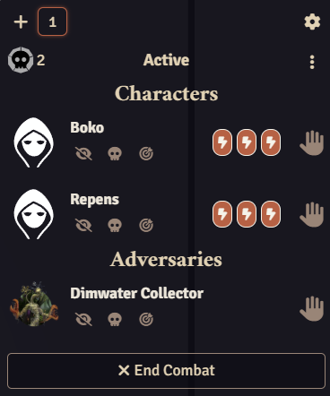
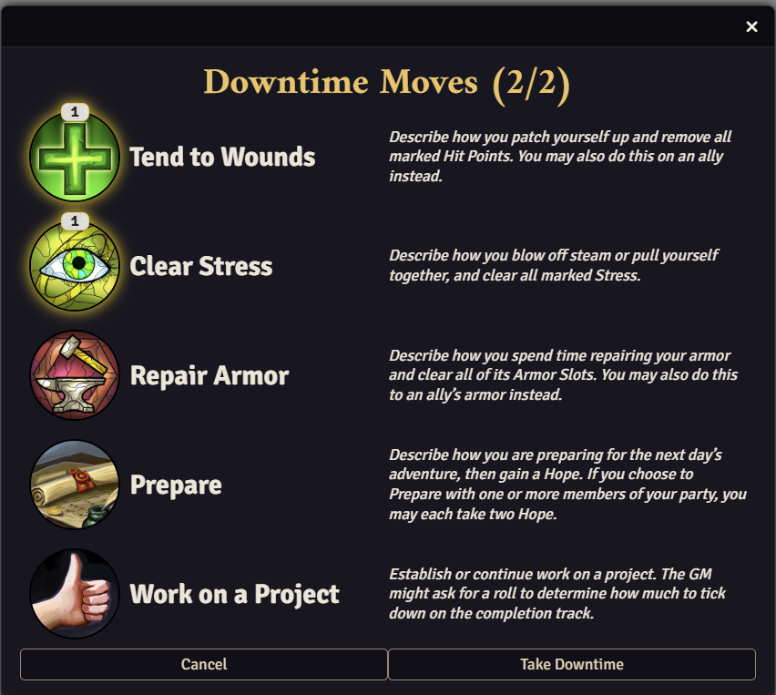
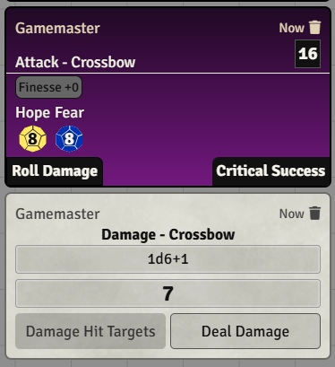
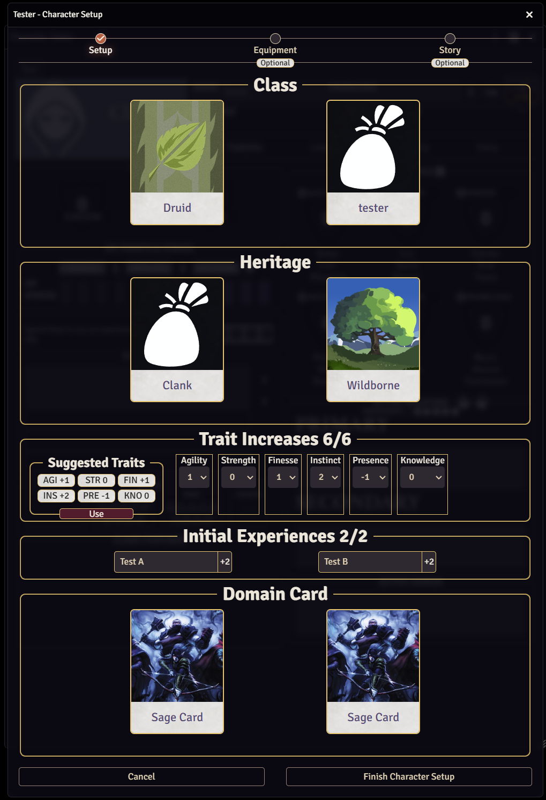
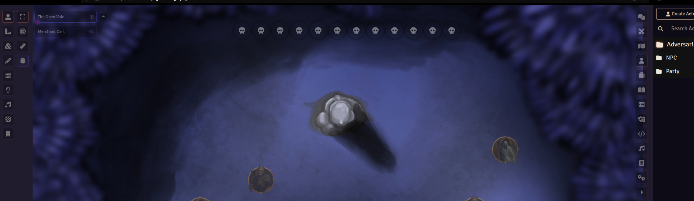
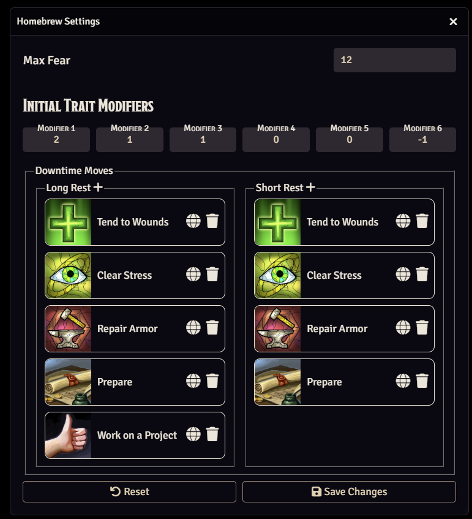
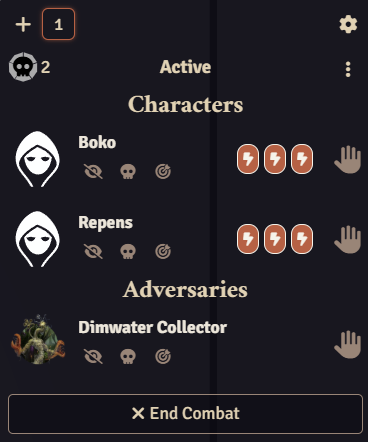
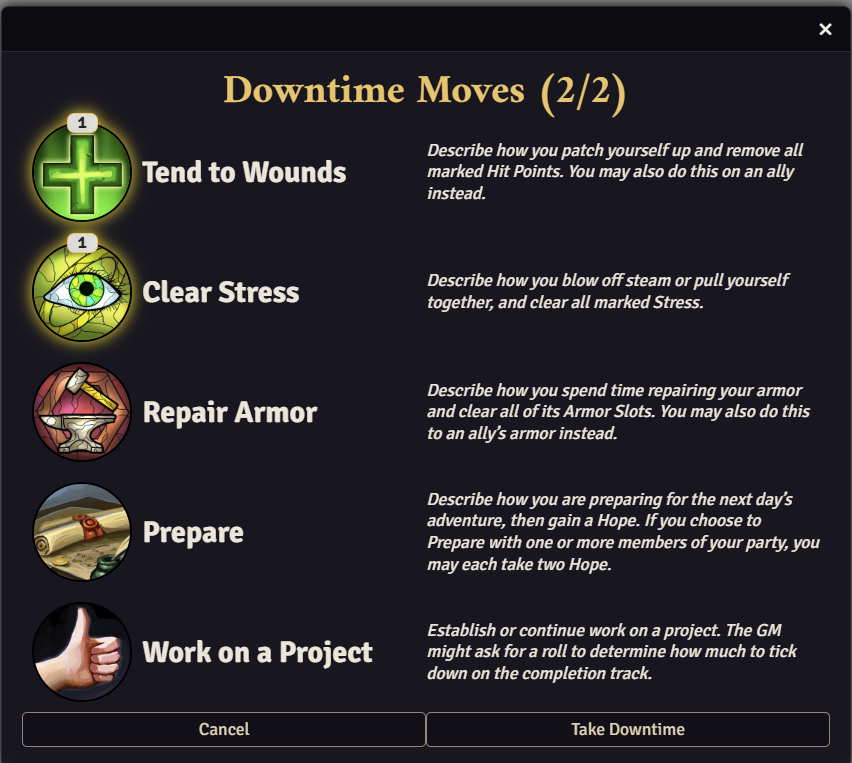
 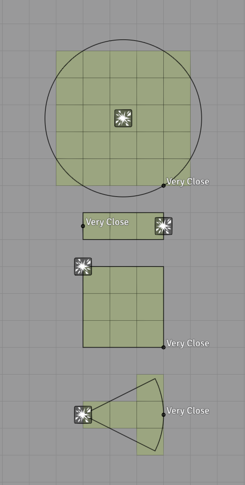
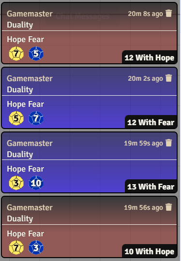
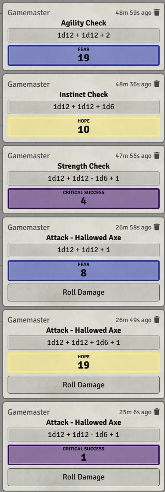
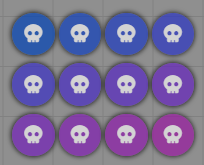
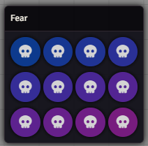
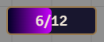
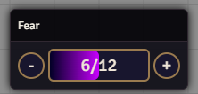
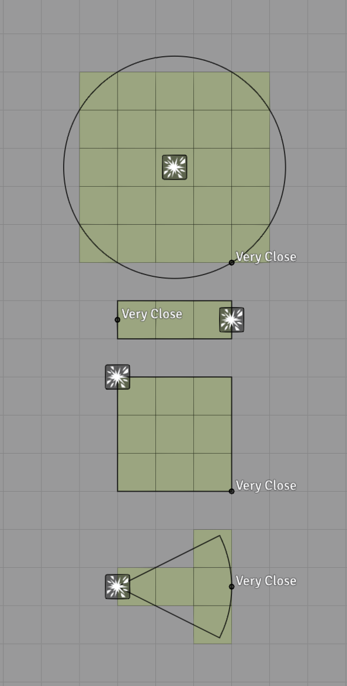
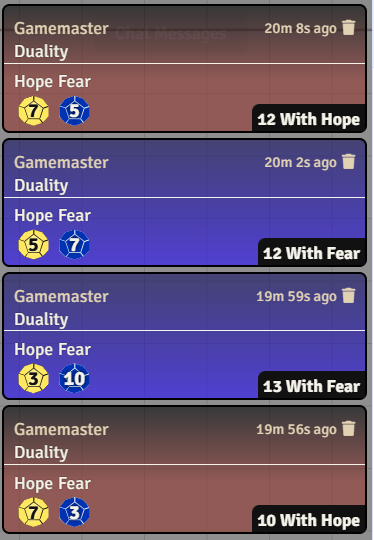
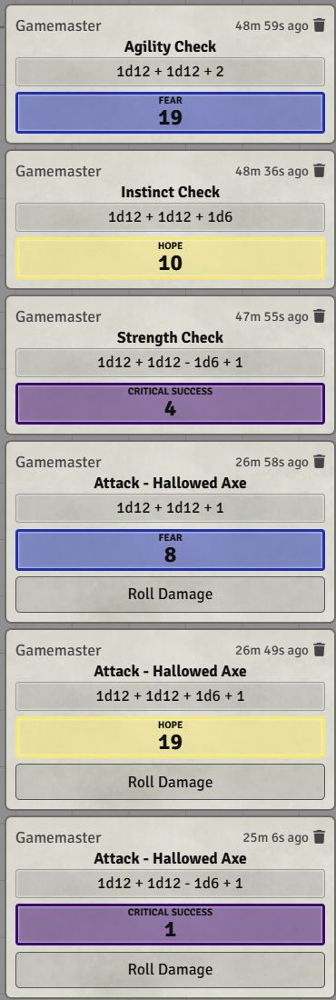
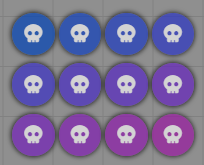
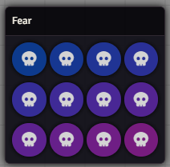
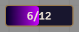
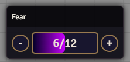
Frequently Asked Questions
The Install button is currently not working!
The system is not 100% done yet, but it will be released very soon. Please check the Discord server for an official announcement, at which point the link will be working.
Why is it called Foundryborne?
Communities in Daggerheart are all named -borne (Wildborne, Seabornde, Loreborne... etc.). Since this is a Community Project, we decided to name it Foundryborne.
(How) Can I contribute?
You can find a link to the repository in the menu on this website. Please fork the repo & create a pull request. We also recommend to join the Discord server.
Check the Milestones and grab an unassigned task.
I'm not a developer — can I still contribute?
Yes! Whenever we need non-developer support, we’ll ask the community for help — including testing. Just keep an eye on #general (in the future, there will be a dedicated announcements channel).
I am an artist and would love to contribute!
Please get in touch with us using the #contact-us channel on our Discord server.
Can I help with data entry?
We currently do not need any help with data entry. However, that could change in the future, in which case we would announce it on our Discord server.
When will the system be available?
Very, very soon.
Is there a preview? Can I help with testing?
Not yet. Technically, you can check out the code and install it manually - if you know what you are doing. However, we can't provide any support or instructions for this currently. Expect things to be broken or missing until a release version has been published.
Is this legal?
Yes! Darrington Press changed the CGL to allow Foundry system development, including the SRD content.
What about translations?
We want to offer translations for the system as well, but that will probably happen after the initial release. For the officially announced translations we want to wait for their release first.
Which FoundryVTT version will I need for this system?
We are developing for v13. If you don't want to upgrade yet for any reason, you can use the portable version of v13 temporarily until you are ready.
What features/automations will there be?
We strife to automate as much as possible - where it makes sense. It will also be possible to disable automations in the system settings. You will also find a lot of settings for supporting homebrew content. We aim to include the complete SRD content as well.
There will be character creation automation, as well as levelling up automation. We have a global fear tracker that can be customized, a robust countdown system, and even support for the optional action tracker, where players can request the spotlight from the GM and have 3 action tokens each.
This list is not complete.
What about SRD content?
With the new CGL upate we are allowed to include all SRD content, which should be ready for the first official release.
What about the Void playtest content?
The Void playtest materials are not part of the SRD and therefore can't be included with the system. However, the system makes it easily possible to add custom domains and (sub)classes.
Will you include the official artwork?
The official artwork is not part of the SRD and therefore can't be included with the system. However, you will be able to provide your own artwork for everything. We aim to include as much (non-official) artwork as possible.
How can I install the system from the GitHub repository?
We currently do not offer any support to do a manual installation of the system from the code in the repository. Please wait until an official version has been released, then you can just install it like any other system from within Foundry directly.
What about Demiplane intergration?
Demiplane currently has no API to make any integration possible. However, we have reached out to them and will be actively talking with the Demiplane to see if any kind of integration would be possible. This is most likely a feature for a later release however, or possibly even a separate module.
I have another Question!
Please join the Discord Server, especially the #community-support channel. If your question has not been answered, please use the ticket system in #contact-us.
Please do not DM the dev team directly, as we are getting too many messages which are distracting us from our work.